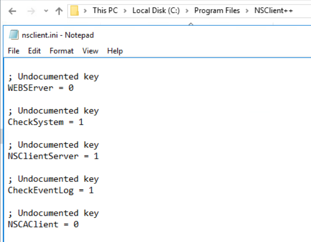
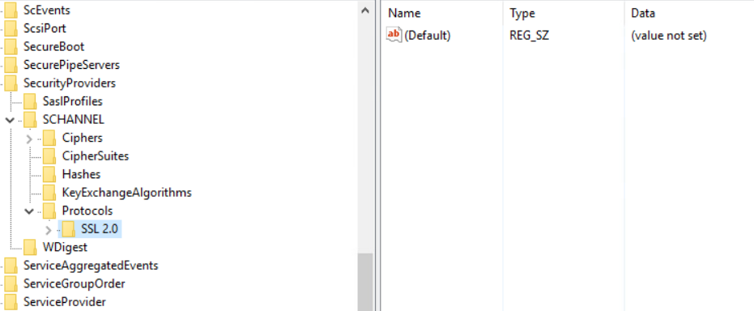
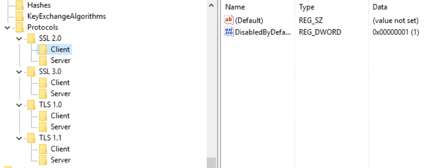

SSL/TLS Hardening
Shown to remediate multiple vulnerabilities, including BEAST, Poodle, and various birthday attacks
- Navigate to C:\Program Files\NSClient++\NSClient.ini
- Change the values at WEBSERrer and NSCAClient from 1 to 0

- Most servers do not let you save the file directly in the NSCLient++ folder. However, if you save it to Documents and then move it into NSCLient++, it will allow you to replace the original
- Run regedit to access Registry
- Export Registry to create a backup
- Navigate to HKey_Local_Machine\System\CurrentControlSet\Control\SecurityProviders \SCHANNEL\Protocols\

- Create Keys for SSL 3.0, TLS 1.0, and TLS 1.1 (I delete the SSL 2.0 key and remake it to my own specifications as well, though this shouldn’t be necessary)

- Create a Client and a Server key for each one
- Create a DWORD called DisabledByDefault for each Client and Server Key, and set the value to 1
- Restart Server, as soon as it is safe and approved to do so
- These steps should have remediated common SSL/TLS issues (BEAST, Poodle, etc.) but always perform a secondary scan to confirm after the remediation steps are complete and the server has been restarted